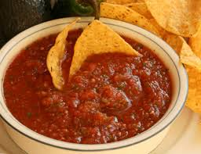

Сальса (Salsa)
Сальса — популярный мексиканский соус. Подается с кукурузными чипсами. Можно подать к мясу. Помидоры необходимы спелые и вкусные, от них очень зависит вкус соуса. Подают соус холодным.
Ингридиенты:

500 г помидоров
150 г лука
небольшой перчик чили
сок половины лайма
2 зубчика чеснока
кинза (я использовала петрушку)
соль
перец
растительное масло
Приготовление
Лук и чеснок мелко нарезать.
Помидоры очистить от шкурки, мелко нарезать.
У перца чили удалить все семена, мелко нарезать.
Зелень мелко нарезать.
На растительном масле обжарить лук и чеснок.
Добавить помидоры, посолить, поперчить.
Тушить 2–3 минуты.
Добавить чили.
Тушить 2–3 минуты.
Добавить сок лайма.
Следом добавить зелень, перемешать, убрать с огня.